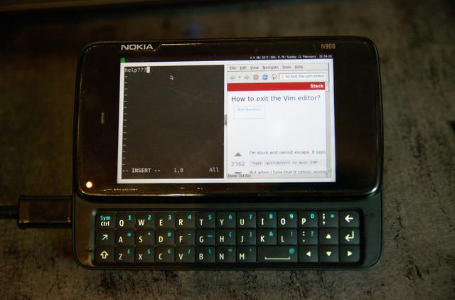

I3wm
|
 i3wm on the Nokia N900 | |
| Name | i3wm |
|---|---|
| Graphics stack | i3wm on Xorg |
| In postmarketOS | |
| Package | postmarketos-ui-i3wm |
| Status | Available |
{kind=link}
Contents
Status
i3wm is working quite well on the N900. It does not make sense to run this interface on a device without a hardware keyboard, because it is a tiling window manager. Since the N900 keyboard does not provide the same keys, as a regular keyboard does, the N900 device package has its own i3 config. It is easy to add such a config to your device as well, just look at how it's done in device-nokia-n900, modify your device package accordingly and make a pull request.
Installation
Run pmbootstrap init and choose i3wm in the interface section.
Currently this installs lxdm as display manager (a common display manager is planned, see gitlab issue 88). When booting for the first time, you need to select i3 in the top left dropdown, where it allows you to choose the session.
Ideas
- How about a wallpaper for the N900 with i3wm, that is based on the postmarketOS wallpaper, but shows the keybindings on the desktop?
- Someone started working on porting this setup, which would enable touch-only devices to use it.
Guide
Follow the Display guide to change and fix display related issues.
See also
- Popular /r/unixporn post
- #1225 initial pull request